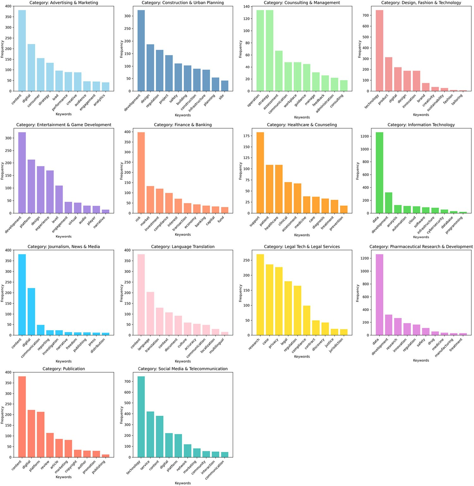
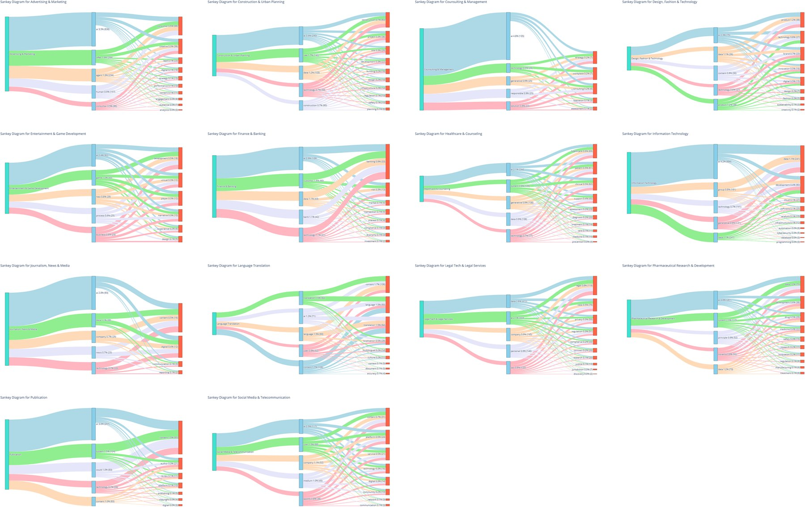
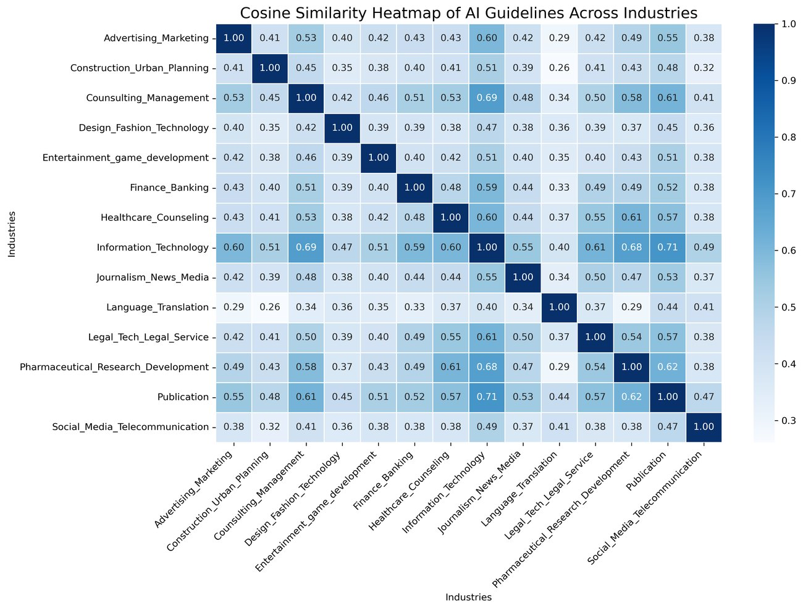

k = 8governance themes, chosen by three diagnostics
≥ 75%top terms stable under bootstrap (ARI ≳ 0.7)
Overview
Companies are writing their own rules for generative AI faster than regulation can keep up, yet little is known about how corporate governance compares across sectors. We built IGGA (Industrial Guidelines and Policy Statements for Generative AIs), a dataset of 160 official guidelines and policy statements from top-tier companies in 14 industrial sectors, and analyzed it with TF-IDF, K-Means clustering, keyword frequency maps and Sankey co-occurrence diagrams. The analysis surfaces eight governance themes and shows clear divergence by sector: transparency in technology, consent in healthcare and IP protection in publishing. We translate the findings into a modular governance architecture: universal baseline duties plus sector-specific risk modules.
Highlights
Eight themes emerge: data governance and privacy; safety and human oversight; security and abuse prevention; IP and content integrity; transparency and explainability; risk and compliance; workforce and change management; innovation and sandboxes.
Privacy dominates the discourse (227 mentions in legal tech alone), while disclosure appears only 14 times and human-centric just twice across all documents: clear blind spots for future guidelines.
A convergent baseline is forming across frameworks from OECD to ISO and NIST: privacy-by-design, explainability and continuous risk management.
We propose universal duties (audit trails, bias logs, disclosure triggers) plus sector “risk modules”, so lower-resource sectors adopt only what they need.
Results

Fig. 1 of the paper: frequency of the ten key concepts in each of the 14 sectors.

Fig. 2 of the paper: industry-wise Sankey diagrams of keyword co-occurrence in AI integration guidelines.
All sectors
Collaborative governance
Modular “living” guidelines co-created by developers, regulators, users and ethicists, refined through AI-assisted audits and sandboxes
Adaptive oversight
Healthcare & pharma
Low-risk tools iterate quickly; high-risk diagnostics stay under real-time safety monitoring, with consent traceability
Augmentation-first
Creative & language
Human review of AI-generated content and full disclosure of AI use
Tiered explainability
Social media
High-level summaries for users, detailed logic for regulators, within GDPR/CCPA limits
Human–AI collaboration
Design & entertainment
Label AI-generated output and secure creator IP
Proactive governance
Legal tech
Pre-deployment bias simulations before tools reach clients
Consumer control
Advertising & marketing
User-controlled data-use boundaries that balance personalization and exploitation
Model-risk control
Finance
Model-risk approvals and sandbox stress-tests for fraud detection
Sector-specific governance takeaways from the paper’s synthesis (Table 2).

TF-IDF cosine similarity between industry guideline texts (from the IGGA notebook).
How it works
Selected 160 top-tier companies with official GAI/LLM guidelines across 14 sectors and diverse regions.
Cleaned, tokenized and lemmatized texts with synonym merging; TF-IDF vectorization.
K-Means for k = 2–12: elbow, silhouette and Calinski–Harabasz all favor k = 8; bootstrap stability on 80% resamples, 100 runs.
Key-concept frequency maps, TF-IDF heatmaps and Sankey co-occurrence diagrams per sector.
Jiao, J., Afroogh, S., Chen, K., Atkinson, D., & Dhurandhar, A. (2026). Generative AI and LLMs in industry: a text-mining analysis and critical evaluation of guidelines and policy statements across 14 industrial sectors. Humanities and Social Sciences Communications, 13, 410.